Our full 13-step Meshmixer workflow, from raw skull import to a print-ready, flanged, screw-holed implant.
1
STEP 01
Import STL
File → Import → load the segmented skull STL into Meshmixer.
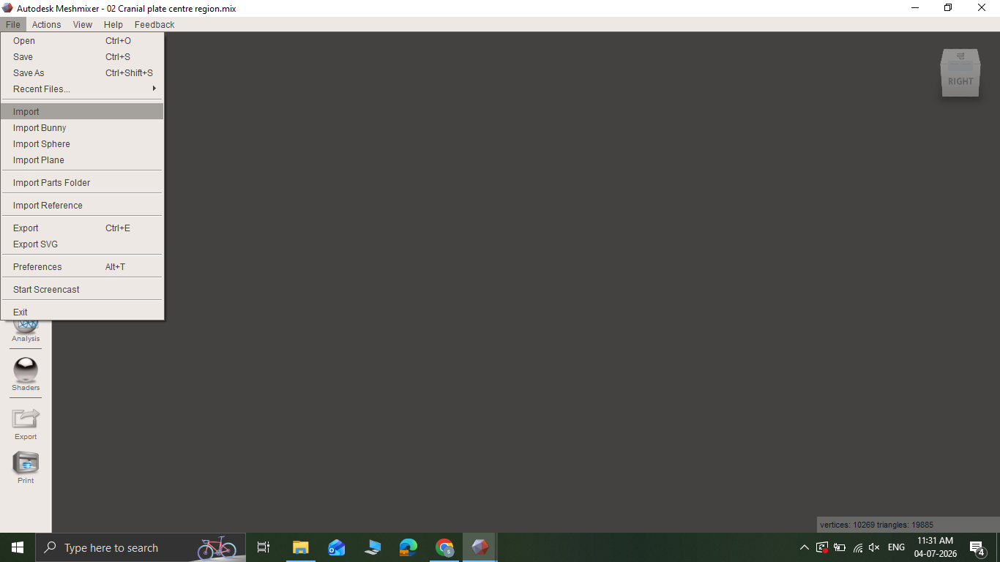
2
STEP 02
Analysis → Inspector (Repair Skull)
Open the Inspector tool from the Analysis panel. It automatically detects and repairs holes, non-manifold edges, and flipped normals — the skull mesh ends up clean and watertight.
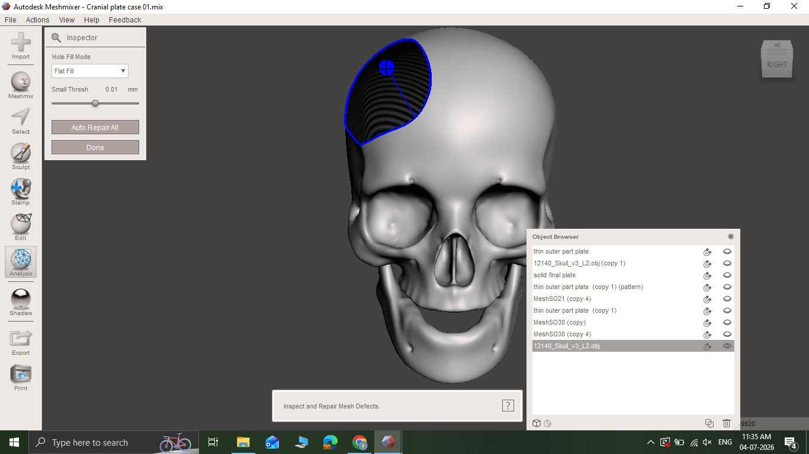
3
STEP 03
Duplicate Skull & Hide Original
Use Edit → Duplicate to create a copy of the skull. Hide the original skull and work only on the duplicate.
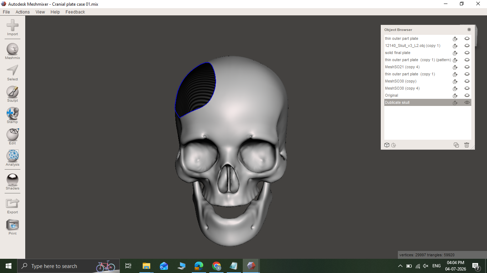
4
STEP 04
Enable Symmetry on Duplicate Skull
Select the duplicate skull and turn on the Symmetry option. This sets the sagittal midline plane, required for mirroring later.
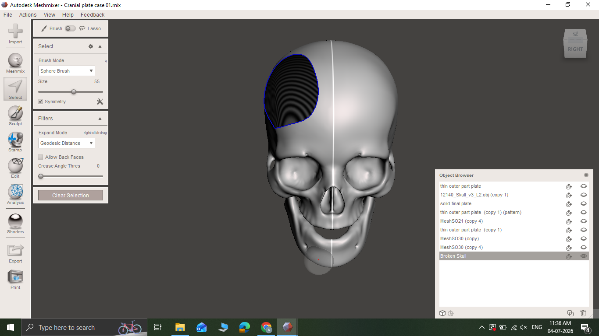
5
STEP 05
Select Defect Boundary & Separate
Sketch along the edge of the broken/defect area with the Sphere Brush to define the boundary, select the patch, then Edit → Separate. This turns the defect area into its own separate object.
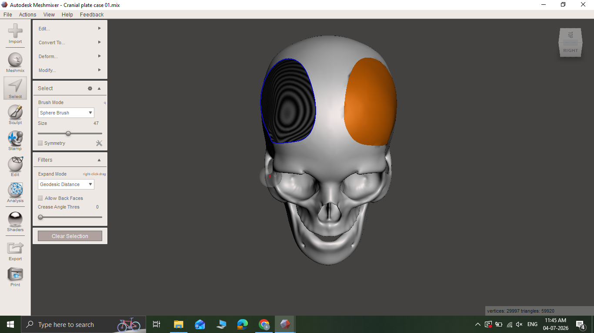
6
STEP 06
Mirror the Separated Patch
Select the separated patch → Analysis (or Edit) → Mirror. Using the symmetry plane, the patch mirrors from the healthy side — giving the correct anatomical shape for the defect.
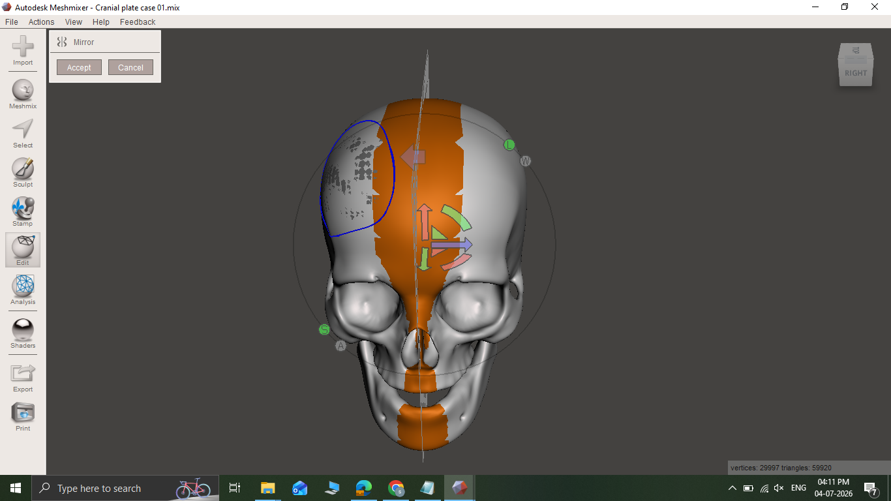
7
STEP 07
Show Original Skull & Align Patch
Make the original skull visible again. Use the Transform tool (move/rotate/scale) to align the mirrored patch onto the defect site on the original skull.
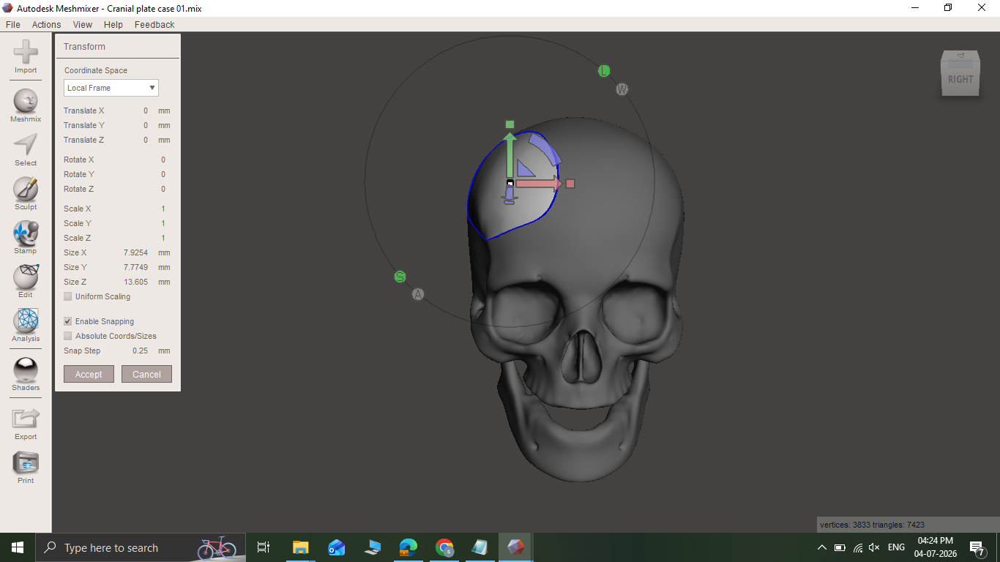
8
STEP 08
Fine Alignment with Sculpt Brushes
Use Sculpt → Brushes (Drag, ShrinkWrap, Robust Smooth) to fit the patch precisely to the curvature of the original skull, with no gaps or overlaps.
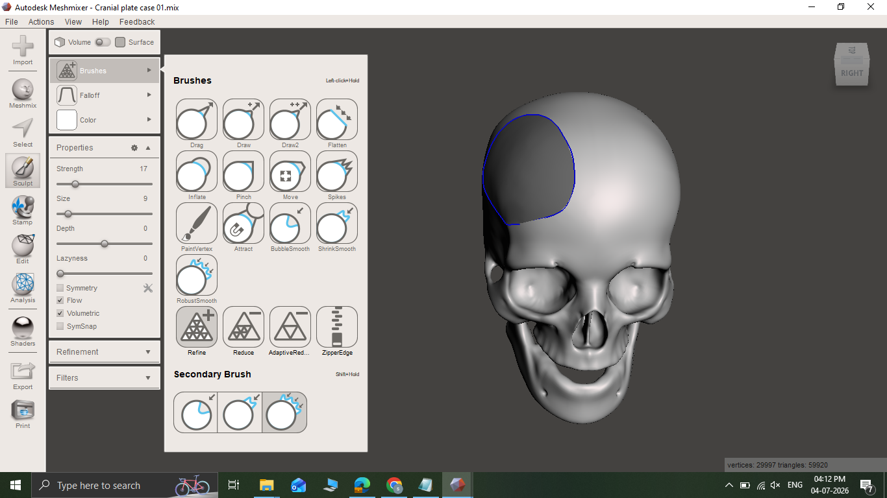
9
STEP 09
Smooth Edges with Refine Brush
Select the patch → Sculpt → Brushes → Refine. This blends the patch edges seamlessly into the surrounding skull surface.
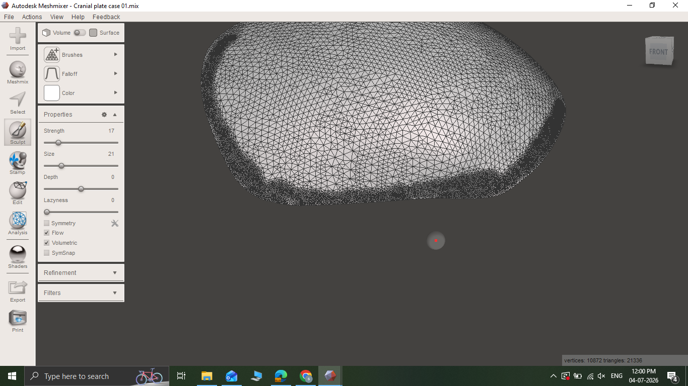
10
STEP 10
Create Voronoi Pattern (Dual Edges)
Edit → Make Pattern (Voronoi/Lattice). A dual-edge voronoi pattern is generated on the plate — lighter weight, with openings for drainage and bone growth.
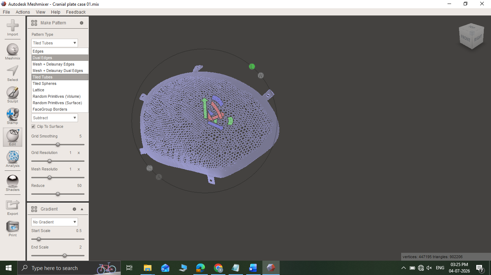
11
STEP 11
Add Flanges
Use the Draw brush to add flanges (small extra lips of material) along the edges of the plate, for fixation and added strength.
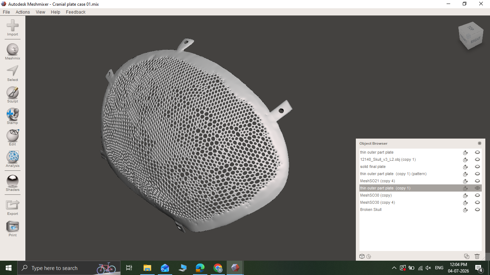
12
STEP 12
Add Cylinders for Screw Holes
Use the Add Cylinder tool to place cylinders on the flanges, set the diameter to match screw size, align, then apply Boolean Difference to create fixation screw holes.
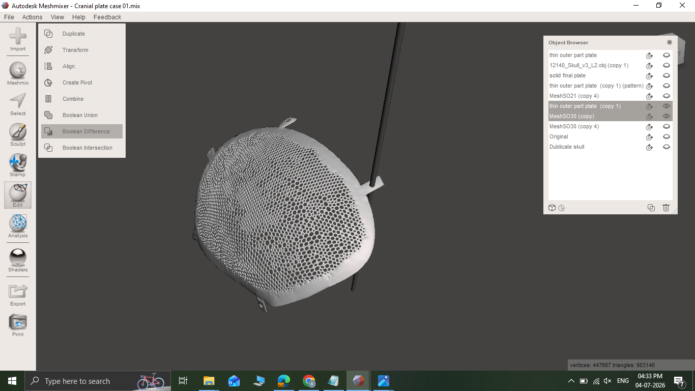
13
STEP 13
Export STL
Run Analysis → Inspector one more time to confirm no errors, then File → Export → STL (binary format) — ready for printing/casting.
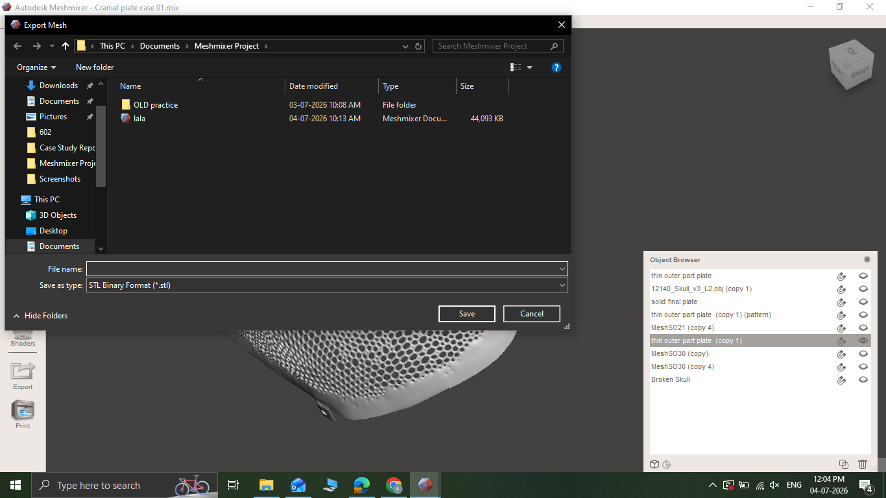
📚 Continue Learning
See the Workflow Applied to Real Patients
Every step above is documented end-to-end in our case studies, with downloadable STL files and PDF reports.